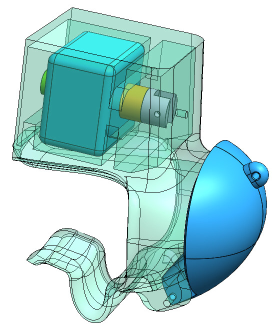

Redesigned fingertip feedback mechanism for a VR haptic suit with unrestricted hand movement

Worked on the tactile section of a broader haptic and VR system designed to enhance user immersion. The original tactile subsystem used solenoids that directly tapped the fingertips, but these were too large and obstructed finger movement.
My primary task was to relocate the solenoids and design a mechanism to propagate the tapping action to the fingertips without obstructing movement. Additionally, I developed concepts for creating the connectors used around the suit, ensuring seamless integration.
Successfully redesigned the tactile feedback system, allowing for free finger movement while maintaining the intended haptic functionality. The connector designs contributed to the overall effectiveness and integration of the tactile system within the suit.

The final redesigned tactile subsystem, showing the relocated solenoid arrangement and the propagation mechanism that delivers fingertip feedback without restricting hand movement.

Assembly stages of the finger mechanism, showing how the components fit together within the constraints of the haptic suit glove.